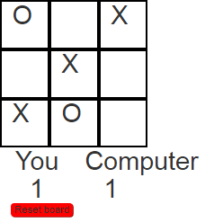

Tic Tac Toe

I had dabbled with JavaScript here and there when it was needed. Prior to this, the only project with a JavaScript focus was a team project during the Great Canadian Appathon. Wanting to explore the language more on my own, I decided to create this simple Tic Tac Toe game.
Currently the game is just the logic in JavaScript and needs to beautified with CSS. The computer player also selects a random available space, future versions will have logic to select a space based on the state of the board.
